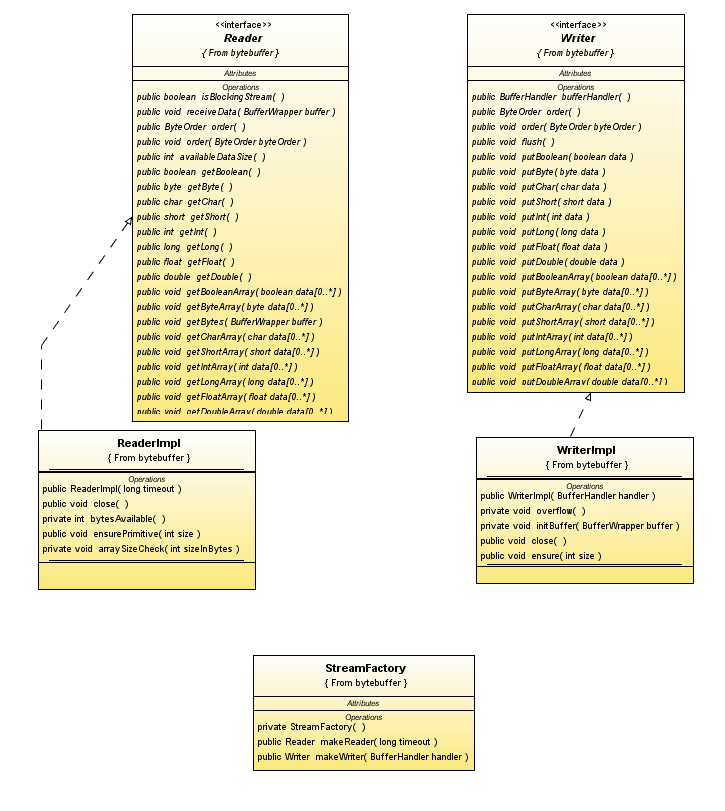

Streaming APIs for Grizzly
One important aspect of Java network communications is proper buffer
management. This becomes a big issue because of the java.nio.ByteBuffer
class that must be used in the java.nio classes. In particular,
java support direct ByteBuffers which are not heap allocated.
Direct ByteBuffers are expensive to create, and slow to be recovered by
the garbage collector. This leads to two problems if a naive
implementation is used:
- IO may be slower than desired because of frequent direct
ByteBuffer allocations.
- Since a system may need large amounts of memory for message
buffering, the slow reclamation of direct ByteBuffers can result in
OutOfMemory errors.
One way of attacking this problem is to remove the disadvantages of
heap ByteBuffers, so that direct ByteBuffers are not needed for IO.
Charlie Hunt is pursuing this, but it requires significant work in the
Java VM compilers and garbage collectors, so it is unlikely to show up
very soon
in Java (certainly not before JDK 7 is released). Consequently, we need
to look at a different solution.
To avoid frequent allocations, we want to infrequently allocate large
ByteBuffers (which I'll call Slabs here) and then carve the Slab into
smaller pieces for individual IO operations. The Slabs
can be pooled, so that empty Slabs can be re-used. In order to do this,
we need to properly dispose of the individual allocations from the
Slab.
This essentially means we are need some kind of manual memory
management in Java (unfortunately). To make this palatable, we bury the
use of buffers behind a streaming API, so that the client need
not ever interact directly with ByteBuffers (except possibly in
simple ways in setting up a ProtocolChain for Grizzly).
This document describes the APIs and their implementation in detail,
together with some notes on possible integration with Grizzly and use
of these APIs in CORBA. The implementation is currently complete, but
not fully tested.
Buffer Management
There are several fundamental APIs in this design that are used for
buffer management:
- Allocator provides two allocate
methods:
one that allocates a buffer of a given size, the other allows a minimum
and maximum size. The second form is intended for use in a channel
reader, which may (for example) prefer a buffer of 100K, but requires
at least 10K for reasonable efficiency. There are two implementations
of an allocator: a pooled implementation and a non-pooled
implementation. Either implementation may be used with direct or
heap ByteBuffers.
- BufferWrapper is a wrapper
around a
ByteBuffer, and is the result of an Allocator.allocate call.
BufferWrappers provide a number of convenience methods, some of which
hide ByteBuffer manipulations. Each BufferWrapper has a small
amount of space reserved before the start of the data for an efficient
prepend operation. For example, reading of split primitives is
handled in the streams by using an 8-byte header, so that 5 bytes from
the start of a long can be easily prepended to the remaining 3 bytes in
the next buffer. prepend may also be useful for things like handling
the 12 byte GIOP header in CORBA. Note that the dispose method on the
BufferWrapper must be called once the stream is finished with the
BufferWrapper.
- AllocatorFactory is used to
create both kinds of Allocators, and also to create SlabPools.
- AllocatorFactory.SlabPool is
used
to hold a number of Slabs. A SlabPool can be shared by a number
of pool Allocators, but note that each Allocator always has one Slab
associated with it, so it may be necessary to control the number of
pool Allocators.
Here is a UML class diagram that illustrates these APIs and their
implementation:

For convenience, here are links to all of the allocator related classes:
- Allocator, the basic interface.
- AllocatorBase, the abstract
base class for Allocator implementations.
- AllocatorFactory. the static
library class used to create Allocators and SlabPools.
- BufferWrapper, the wrapper
around ByteBuffer which Allocators return.
- SlabPoolImpl, the implementation
of the AllocatorFactory.SlabPool interface.
- Slab, the representation of large
ByteBuffers used for allocation.
AllocatorBase maintains a reference to
the current slab, which is used for allocations. The details of
obtaining and releasing a slab, and of disposing a BufferWrapper allocated from a slab, are
captured in the abstract methods. The AllocatorFactory
interface provides a means to create Allocator and SlabPool instances.
The SlabPool internally maintains
queues of Slabs in 3 possible states:
- Empty, which means that capacity=limit and position=0, and all
allocated space has been disposed. Calls to
AllocatorPoolImpl.obtainSlab are satisfied either by getting an empty
Slab, or by creating a new Slab if none exists.
- Partial, which means that position is >= 0, and possibly part
of the allocated data has been disposed.
- Full, which means that position == limit, and part but not all of
the allocated data has been disposed. A count is maintained of the
total disposed size. When this is equal to the allocated size,
the Full Slab state is changed to Empty and the Slab is moved to the
empty queue.
AllocatorFactory.makePoolAllocator
allows a number of pool allocators to be created from the same shared SlabPool. Each such Allocator will get its own Slab for its
exclusive use. This should minimize contention in highly concurrent
systems.
Streams for Reading and Writing
Streams provide a useful IO abstraction, because they hide the buffer
management complexities from the user. Like ByteBuffer, streams
also support both big and little endian data representation. I have
defined 3 interfaces and classes in this area;
- Reader, which provides support for
getting Java primitives and arrays of primitives from a sequence of
buffers. Primitive arrays are provided because they can be implemented
much more efficiently than simply getting each element individually.
Reader provides 3 other important methods for general use:
- void receiveData( BufferWrapper ), which is used to add more
data to the Reader
- int availableDataSize(), which returns the amount of data
available for get calls in the Reader
- void getBytes( BufferWrapper ), which can be used to fill a
BufferWrapper from one data source, then the result can be added to
another Reader's receiveData method. For example, when a GIOP
ProtocolParser parses a message, it can use getBytes to do so, and
enqueue message fragments directly onto a CDRInputStream.
- Writer, which provides support for
putting Java primitives and arrays of primitive into a sequence of
buffers. Each Writer instance has an associated Writer.BufferHandler,
which defines two methods:
- BufferWrapper overflow( BufferWrapper ), which is called
whenever the Writer's current BufferWrapper is too full for the next
primitive type to be written (arrays are automatically split across
multiple buffers. QUESTION: do we need a bit more support for available
size here to deal with GIOP's twisted fragmentation requirements?). A
typical implementation of the overflow method does something like the
following:
- If the argument is not null, it is written to a
channel. After successful completion of the write (if we are
using non-blocking writes), this old buffer can be disposed of.
- A new BufferWrapper is allocated from the current allocator
(often a pool Allocator assigned to the current thread).
- This new BufferWrapper is returned.
- close( BufferWrapper ). Here the intent is simply to
write and dispose of the buffer, but NOT to allocate a new buffer.
- StreamFactory, which provides
simple methods for creating Reader and Writer instances.
Here is a UML class diagram of the Stream classes:

Here is a summary of the stream related classes:
- Reader, the Reader interface
- ReaderImpl, the implementation of
the Reader interface
- Writer, the write stream interface
- WriterImpl, the implementation of
the Writer interface
- StreamFactory, which provides
static factory methods for Reader and Writer
Using the allocators and streams
The basic model should work as follows:
- A read event is generated by a Selector. This is dispatched to
the ProtocolChain, where the ReadFilter does something like:
- Assign a thread (if necessary) to do the IO for the available
data (and deal with SelectionKey as usual).
- Allocated a buffer from the current thread's Allocator using
allocate( minSizeToRead, maxSizeToAllocate ). For example,
minSizeToRead might be set to 4K to avoid small reads that would
quickly result in another read event, and maxSizeToRead might be set to
64K, to avoid wasting too much space (the slab must be somewhat larger
than the maximum size) in all of the threads that have attached
allocators.
- Read the data from the channel into the buffer.
- Get/create the Reader for this channel. Attach it to some
context to make it available to the protocol parser
- Invoke the protocol parser with the Reader (or a context from
which the Reader may be obtained).
- Control passes to the ProtocolParser. In the GIOP case,
this looks something like:
boolean invokeParser( Reader reader ) {
boolean stop = false ;
while (!stop) {
switch (state) {
case HEADER:
if (reader.availableDataSize() >= GIOP_HEADER_SIZE) {
reader.getBytes( header ) ;
state = BODY ;
// parse header and use that to set expectedBodySize
} else {
stop = true ;
}
case BODY:
if (reader.availableDataSize() >= expectedBodySize) {
BufferWrapper body = allocator.allocate( expectedBodySize ) ;
reader.getBytes( body ) ;
state = HEADER ;
body.prepend( header ) ;
// create message mediator for further processing of data
} else {
stop = true ;
}
}
}
// return moreWorkToDo based
on outstanding requests
}
Note that the Protocol parser has state:
- The state variable, which always has either HEADER or BODY as its
value
- expectedBodySize
- An ORB, to access the CorbaMessageMediator and related machinery
- An allocator, which may simply be a ThreadLocal
The switch statement is used to allow us to correctly resume execution
from where we left off on the last call when there was not enough data
available to read the next header or body.
One other thing I'd like to look at here: can we get to only one place
in the ORB that maps from Connections to fragmented requests?
SocketOrChannelConnectionImpl already maintains a map from request ID
to message mediator. Basically, if this map is NOT empty, we
expect to read more data. So do we really need to maintain all of
this information in the protocol parser?